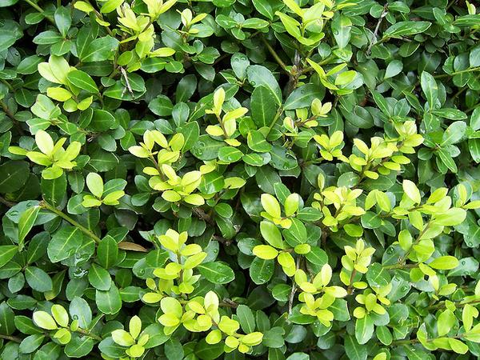
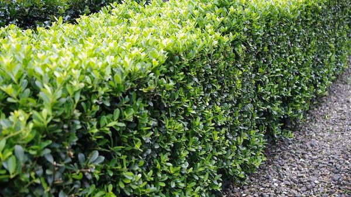
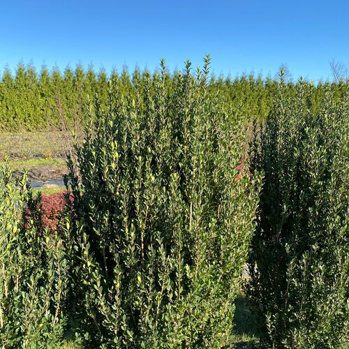

Japanese Holly
Ilex crenata
☀️ Full–part sun
💧 Average
📏 3–4 ft
🌿 Evergreen
🌎 Japan
🛠️ Easy
× 2
Compact evergreen shrub with small dark-green leaves — a low-maintenance boxwood substitute that holds shape year-round.
Check-in signs
- Brown/crispy patches → winter burn or drying; scratch-test bark for green
- Yellowing leaves → poor drainage or wrong pH (prefers slightly acidic)
- Bare interior, green outside → normal old-leaf shed
Watch out for
- Root rot in soggy soil
- Scale insects on stems
Care notes
Light shaping any time. No heavy pruning needed. Mulch to keep roots cool and moist; avoid wet feet.